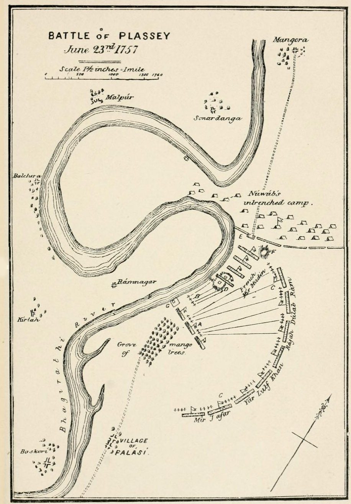
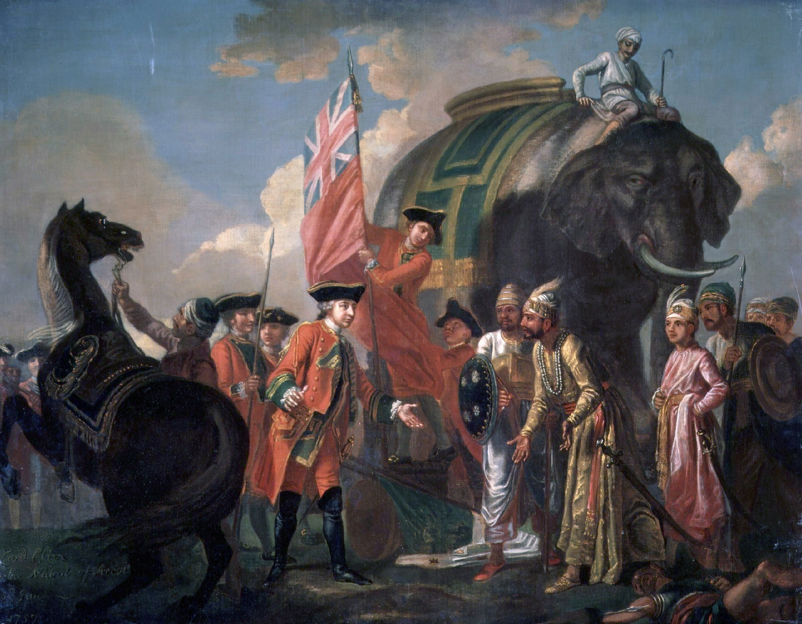
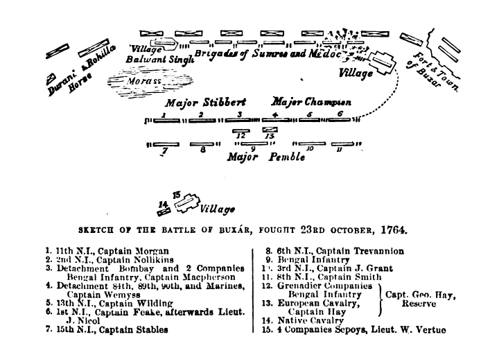
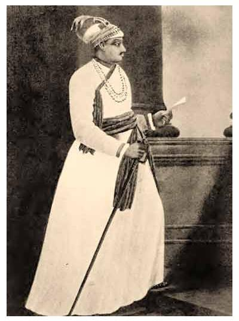

Plassey and Buxar — The Foundation of British Rule
📂 Modern Indian History⚖️ Weight: 0.9🎯 Expected: 1–2 Qs
📚 Core Content & PYQ Alignment
69th BPSC PYQTreaty of Allahabad: The 69th directly asked: "The Treaty of Allahabad (1765) was signed after the battle of Buxar (1764)." Answer confirmed: Buxar → Allahabad → Diwani. This is the single highest-yield fact chain for this topic.
BPSC PATTERNBattle matching and chronological ordering: BPSC consistently asks: (1) "Match the battle with the year/leader", (2) "Arrange in chronological order", (3) "Which treaty was signed after which battle?" The Plassey→Buxar→Allahabad→Diwani chain is the most tested sequence in Modern History.
BIHAR PYQBuxar is in Bihar: Buxar is a town in Bhojpur district, Bihar, on the Ganga. Mir Qasim's capital was at Munger (Monghyr), also in Bihar. Both battles of this topic have Bihar geography connections — BPSC's "more Bihar-specific" trend (71st) makes this especially relevant.
💡 Deep-dive ready: Complete battle-by-battle analysis with maps, the Dual System explained, the puppet Nawab cycle, Bihar connections (Buxar battlefield, Munger arsenal), and 7 exam-focused predictions for the 72nd BPSC:
Plassey & Buxar Master Detail →
A. The Two Battles — Master Comparison Table EXAM CORE
These two battles, fought 7 years apart, transformed the English East India Company from a trading company into a political power. Learn every cell of this table — BPSC tests each column.
Attribute
Battle of Plassey
Battle of Buxar
Date
23 June 1757
22 October 1764
English leader
Robert Clive
Major Hector Munro
Opponent(s)
Siraj-ud-Daulah (Nawab of Bengal)
Mir Qasim (Bengal) + Shuja-ud-Daulah (Awadh) + Shah Alam II (Mughal Emperor)
Location
Plassey (Palashi), Bengal
Buxar, Bihar (Bhojpur district, on the Ganga)
English troops
~3,000
~7,000
Opponent troops
~50,000
~40,000 (combined)
Key factor
Mir Jafar's betrayal (withheld troops)
Superior English discipline and artillery; disunity among allies
Outcome
Siraj executed; Mir Jafar made Nawab; EIC got zamindari of 24 Parganas
Mir Qasim fled; Diwani of Bengal-Bihar-Orissa granted to EIC (1765)
Significance
EIC gained political influence in Bengal
EIC became the de facto ruler of Bengal — true foundation of British rule
Treaty after
Alinagar Treaty (1757) with Siraj before the battle
Treaty of Allahabad (1765)
🧠 Mnemonic — "P-B-A-D" (The 4-Step Conquest): Plassey (1757) → Buxar (1764) → Allahabad Treaty (1765) → Diwani (1765). "Plassey gave influence, Buxar gave power, Allahabad gave legality, Diwani gave revenue." The English went from traders to rulers in 8 years.

Battle of Plassey (23 June 1757) — Robert Clive's ~3,000 troops defeated Siraj-ud-Daulah's ~50,000 army, largely due to Mir Jafar's betrayal. The battle gave the EIC political influence in Bengal.
B. Battle of Plassey (1757) — Detailed Account
Background: The Black Hole of Calcutta incident (June 1756) — Siraj-ud-Daulah captured Fort William and allegedly imprisoned 146 English prisoners in a small room, of which only 23 survived. Whether exaggerated or not, this was the English justification for sending Clive to Bengal.
Pre-battle: Clive recaptured Calcutta (January 1757) and signed the Treaty of Alinagar with Siraj (Feb 1757). But Siraj was already plotting with the French, so Clive decided to overthrow him.
The betrayal: Clive bribed Mir Jafar (commander-in-chief of Siraj's army), Rai Durlabh, and Jagat Seth (the wealthy banker). Mir Jafar agreed to withhold his troops during the battle.
The battle: Fought at Plassey (Palashi), on the Bhagirathi-Hooghly river, ~150 km north of Calcutta. Despite having ~50,000 troops vs Clive's ~3,000, Siraj's army collapsed when Mir Jafar's large contingent did not fight. Siraj fled and was captured and executed by Mir Jafar's son, Miran.
Aftermath: Mir Jafar was installed as Nawab. He paid the EIC ₹1.75 crore as compensation and granted the zamindari (land revenue rights) of 24 Parganas. But Mir Jafar could not meet the EIC's growing demands and was replaced by Mir Qasim in 1760.

Robert Clive meeting Mir Jafar after the Battle of Plassey — Mir Jafar was rewarded with the Nawabship of Bengal for betraying Siraj-ud-Daulah. He earned the epithet "Gaddar-e-Hind" (Betrayer of India).
C. Battle of Buxar (1764) — Detailed Account
Background: Mir Qasim (Mir Jafar's son-in-law) was installed as Nawab in 1760 but soon modernised his army, shifted his capital to Munger (Monghyr), Bihar, and challenged the EIC's trade privileges. He abolished all internal duties on Indian traders — making Indian and English merchants equal, which the English refused to accept.
The conflict: The English attacked Mir Qasim's forces; he was defeated and fled to Awadh, where he allied with Shuja-ud-Daulah (Nawab of Awadh) and Shah Alam II (Mughal Emperor).
The battle: Fought at Buxar, Bihar (Bhojpur district, on the Ganga) on 22 October 1764. Major Hector Munro led ~7,000 EIC troops against the combined army of ~40,000. Despite numerical inferiority, the English won due to superior discipline, artillery, and the disunity among the three Indian rulers.
Aftermath: Mir Qasim fled and died in obscurity. Shuja-ud-Daulah signed the Treaty of Allahabad (1765) — paid ₹50 lakh war indemnity, ceded Kara and Allahabad. Shah Alam II was given Kara and Allahabad in exchange for the Diwani of Bengal-Bihar-Orissa (right to collect revenue) — granted to the EIC for an annual tribute of ₹26 lakh.
Why Buxar is more significant than Plassey: Plassey defeated one Nawab (by betrayal); Buxar defeated three major powers (by military superiority). Plassey gave influence; Buxar gave the Diwani — the revenue of Bengal-Bihar-Orissa, making the EIC the de facto ruler.

Battle of Buxar (22 October 1764) — fought in Buxar, Bihar. Major Hector Munro defeated the combined armies of Mir Qasim, Shuja-ud-Daulah, and Shah Alam II. This was the decisive military victory that led to the Diwani grant.
D. The Treaty of Allahabad (1765) — Key Terms
Party
Terms
Shuja-ud-Daulah (Awadh)
Paid ₹50 lakh war indemnity; ceded Kara and Allahabad to the Mughal Emperor; gave Balwant Singh (Zamindar of Banaras) to the English; Awadh became a buffer state
Shah Alam II (Mughal Emperor)
Granted Diwani of Bengal-Bihar-Orissa to the EIC; received Kara and Allahabad; EIC to pay ₹26 lakh annual tribute to the Emperor
Mir Jafar (Bengal)
Reinstated as Nawab (after Mir Qasim's flight); paid ₹50 lakh to the EIC; retained only Nizamat (criminal justice)
E. The Dual System of Government (1765–1772)
Introduced by: Robert Clive in 1765, after the Diwani grant.
Division of power: EIC held Diwani (revenue collection + civil justice); the Nawab held Nizamat (criminal justice + police).
The exploitation: The EIC had the revenue (power) without the responsibility of administration; the Nawab had the responsibility (law and order) without the revenue to fund it. This led to the Bengal Famine of 1770 (killed ~1 crore people, ~1/3 of Bengal's population) — the EIC continued collecting revenue even during the famine.
Abolished by: Warren Hastings in 1772. The EIC now held both Diwani and Nizamat, becoming the de jure ruler of Bengal.
🧠 Mnemonic — Dual System "D-N Split": Diwani = EIC (revenue + civil) → had the money Nizamat = Nawab (criminal + police) → had the headache "EIC took the money, Nawab got the headache." Warren Hastings ended this farce in 1772.

Siraj-ud-Daulah — the last independent Nawab of Bengal. His defeat at Plassey (1757) ended Bengal's independence and began the British political conquest of India.
📊 The 4-Step Conquest Ladder (1757–1765)
From trade to territory in 8 years — the chain BPSC tests most frequently in Modern History.
1757 — Battle of Plassey: Clive defeats Siraj via Mir Jafar's betrayal
1764 — Battle of Buxar: Munro defeats Mir Qasim + Shuja-ud-Daulah + Shah Alam II (in Bihar)
1765 — Treaty of Allahabad: Shuja pays indemnity; Shah Alam cedes Diwani
1765 — Diwani granted: EIC gets revenue of Bengal-Bihar-Orissa → British rule begins
📋 Fact Matrix — Plassey & Buxar
Item
Value
Notes
Plassey date
23 June 1757
Clive vs Siraj-ud-Daulah; Plassey = Palashi, Bengal
Buxar date
22 October 1764
Munro vs Mir Qasim + Shuja + Shah Alam II; Buxar = Bihar
Treaty of Allahabad
1765
Signed after Buxar; Diwani granted
Diwani grant
1765
By Shah Alam II to EIC; ₹26 lakh/year tribute
Dual System
1765–1772
EIC = Diwani, Nawab = Nizamat; abolished by Hastings
Black Hole of Calcutta
June 1756
Siraj captured Fort William; pretext for Plassey
Mir Jafar
Nawab after Plassey
"Gaddar-e-Hind"; replaced by Mir Qasim 1760; reinstated 1764
Mir Qasim
Nawab 1760–1764
Reformed army at Munger; fought at Buxar; fled
Munger (Monghyr)
Mir Qasim's capital
Bihar town; fortified arsenal; military base
Bengal Famine 1770
~1 crore deaths
Caused by Dual System exploitation; EIC kept collecting revenue
🔶 Bihar Connection
🏛️ Bihar & the Battles of Plassey-Buxar
Buxar is in Bihar: the Battle of Buxar (1764) was fought at Buxar, a town in Bhojpur district, Bihar, on the banks of the Ganga. This is one of the most significant battles in Indian history and it happened on Bihar soil.
Mir Qasim's capital at Munger: Mir Qasim shifted his capital from Murshidabad to Munger (Monghyr), Bihar in 1762. He built a modern arsenal and fortified the town as a military base against the English. Munger's strategic location on the Ganga made it a natural fortress. Some of Mir Qasim's military reforms — including training soldiers in European methods and manufacturing modern firearms — were carried out at the Munger arsenal.
Diwani included Bihar: the Diwani of 1765 covered Bengal, Bihar, and Orissa. This meant the EIC now controlled the revenue of Bihar — including the lucrative saltpetre, opium, and indigo trade that the Dutch had earlier exploited (cross-link Topic #24).
Patna Massacre (1763): before Buxar, Mir Qasim's forces killed ~150 English and Indian prisoners at Patna during the conflict — an event known as the "Patna Massacre" that inflamed English sentiment and led directly to the Battle of Buxar.
Bihar under EIC rule: after the Diwani, Bihar became part of the Bengal Presidency under EIC administration. Patna and Munger became major EIC military and commercial centres — the Patna Opium Factory (1780) was later established on the foundation of this control.
🔗 Cross-Topic Connections
↔ Topic 24 (Advent of Europeans): The factories established by the English (Surat, Madras, Calcutta) and the Farman of 1717 created the commercial foundation that Plassey and Buxar converted into political control. ↔ Topic 26 (Economic Impact): The Diwani of 1765 and the Dual System led directly to the "drain of wealth" from Bengal-Bihar — revenue was extracted without administrative responsibility, causing the 1770 famine. ↔ Topic 27 (Revolt of 1857): The EIC's revenue extraction in Bihar (opium, saltpetre, land revenue) created the discontent that fuelled the 1857 Revolt — Kunwar Singh of Jagdishpur led the Bihar front. ↔ Topic 36 (Constitutional Acts): The Regulating Act of 1773 was Parliament's response to the EIC's mismanagement of Bengal after the Diwani — it created the post of Governor-General (Warren Hastings).
📰 Current Relevance & Potential Traps
Date traps: Plassey = 1757 (not 1756); Buxar = 1764 (not 1765); Allahabad Treaty and Diwani both = 1765 (not 1764). BPSC swaps these dates constantly.
Leader traps: Clive = Plassey (not Buxar); Munro = Buxar (not Plassey). Don't confuse the two English commanders.
Outcome traps: Plassey did NOT grant Diwani (Buxar did). Plassey gave political influence; Buxar gave the Diwani. The statement "Plassey led directly to Diwani" is FALSE.
Buxar location trap: Buxar is in Bihar (Bhojpur district), NOT in Bengal or UP. This is the Bihar-specific angle.
Diwani grantor trap: the Diwani was granted by Shah Alam II (Mughal Emperor), NOT by Warren Hastings or Robert Clive. Hastings abolished the Dual System; Clive introduced it; neither "granted" the Diwani.
Mir Jafar vs Mir Qasim trap: Mir Jafar betrayed Siraj at Plassey; Mir Qasim (Mir Jafar's son-in-law) fought the English at Buxar. Don't swap them — Mir Jafar = Plassey betrayal; Mir Qasim = Buxar rebellion.
(1) Treaty of Allahabad after Buxar (HIGH): "The Treaty of Allahabad (1765) was signed after which battle?" → Buxar (1764). Direct 69th PYQ — likely to be repeated.
(2) Buxar combatants (HIGH): "The Battle of Buxar was fought between the English and the combined forces of —" → Mir Qasim + Shuja-ud-Daulah + Shah Alam II.
(3) Bihar angle — Buxar location (MEDIUM): "The Battle of Buxar was fought in which present-day Indian state?" → Bihar (Bhojpur district). "Mir Qasim's capital was at which Bihar town?" → Munger.
(5) "Not correctly matched" (LOW): Likely trap: "Diwani granted by Warren Hastings" (WRONG — by Shah Alam II) or "Plassey led to Diwani" (WRONG — Buxar did).
✍️ MCQ Practice Set — 25 Questions (BPSC Level)
Q1. The Battle of Plassey was fought in which year?
✅ Correct Answer: (B) — Plassey was fought on 23 June 1757. 1756 is the Black Hole of Calcutta; 1764 is Buxar; 1765 is the Treaty of Allahabad and Diwani grant.
Q2. The Battle of Plassey was fought between whom?
✅ Correct Answer: (A) — Plassey (1757) was between the EIC under Clive and Siraj-ud-Daulah. Mir Qasim fought at Buxar (1764); Shuja-ud-Daulah and Shah Alam II were allies at Buxar.
Q3. Who betrayed Siraj-ud-Daulah at the Battle of Plassey?
✅ Correct Answer: (B) — Mir Jafar, Siraj's commander-in-chief, secretly allied with Clive and withheld his troops. He earned the epithet 'Gaddar-e-Hind' and was made Nawab after Siraj's defeat and execution.
Q4. The Battle of Buxar was fought in which year?
✅ Correct Answer: (C) — Buxar was fought on 22 October 1764. 1761 is the Third Battle of Panipat; 1765 is the Treaty of Allahabad.
Q5. The Battle of Buxar (1764) was fought between the English and which combined army?
✅ Correct Answer: (C) — Buxar was a triple alliance: Mir Qasim (Bengal), Shuja-ud-Daulah (Awadh), and Shah Alam II (Mughal Emperor) fought together against the EIC under Munro. Despite 3-to-1 superiority, they lost due to disunity.
Q6. The Treaty of Allahabad (1765) was signed after which battle?
✅ Correct Answer: (B) — The Treaty of Allahabad (1765) was signed after the Battle of Buxar (1764). Direct 69th BPSC PYQ. Key outcome: Diwani of Bengal-Bihar-Orissa granted to the EIC by Shah Alam II.
Q7. The Diwani of Bengal, Bihar, and Orissa was granted to the English EIC in which year?
✅ Correct Answer: (C) — The Diwani was granted in 1765 by Shah Alam II, following the Treaty of Allahabad. This gave the EIC revenue control over Bengal-Bihar-Orissa — the true foundation of British rule. 1772 is when Hastings abolished the Dual System.
Q8. Who was the Mughal Emperor who granted the Diwani of Bengal to the English EIC?
✅ Correct Answer: (B) — Shah Alam II (1759–1806) granted the Diwani in 1765. He had fought against the English at Buxar but was defeated and signed the Treaty of Allahabad. He received ₹26 lakh/year tribute in exchange.
Q9. Who led the English EIC forces at the Battle of Plassey?
✅ Correct Answer: (C) — Robert Clive led the EIC at Plassey (1757) with ~3,000 troops. Munro led at Buxar (1764); Coote won at Wandiwash (1760); Hastings later became the first Governor-General.
Q10. Who led the English EIC forces at the Battle of Buxar?
✅ Correct Answer: (B) — Major Hector Munro led the EIC at Buxar (1764) and defeated the combined armies of Mir Qasim, Shuja-ud-Daulah, and Shah Alam II. Clive led at Plassey, not Buxar.
Q11. Which battle is considered more significant than Plassey for establishing British power in India?
✅ Correct Answer: (B) — Buxar (1764) is more significant because it defeated three major powers (not one), and led to the Diwani — the revenue of Bengal-Bihar-Orissa. Plassey was won by betrayal; Buxar was a genuine military victory.
Q12. The 'Black Hole of Calcutta' incident (1756) is associated with which Nawab?
✅ Correct Answer: (B) — Siraj-ud-Daulah captured Fort William in June 1756, leading to the Black Hole incident. This was used as the pretext for sending Clive to Bengal, resulting in the Battle of Plassey (1757).
Q13. Mir Qasim was the Nawab of Bengal who:
✅ Correct Answer: (B) — Mir Qasim modernised his army, shifted capital to Munger (Bihar), and challenged English trade privileges. When the English refused to pay duties, he abolished all internal duties — sparking the conflict that led to Buxar.
Q14. Mir Qasim shifted his capital to which Bihar town to strengthen his position against the English?
✅ Correct Answer: (B) — Mir Qasim shifted his capital to Munger (Monghyr), Bihar, in 1762, building a modern arsenal. Munger's strategic Ganga location made it a military fortress — the Bihar connection to the Buxar story.
Q15. The 'Double Government' (Dual Administration) in Bengal was introduced by whom and in which year?
✅ Correct Answer: (A) — Clive introduced the Dual System in 1765: EIC held Diwani (revenue), Nawab held Nizamat (criminal justice). EIC had the money without responsibility; Nawab had responsibility without money. Hastings abolished it in 1772.
Q16. Under the Dual System of Government in Bengal (1765–1772), the EIC held which power?
✅ Correct Answer: (B) — Under the Dual System, EIC held Diwani (revenue + civil justice); Nawab held Nizamat (criminal justice + police). EIC had the revenue power without administrative responsibility — leading to the Bengal Famine of 1770.
Q17. Who abolished the Dual System of Government in Bengal?
✅ Correct Answer: (B) — Warren Hastings abolished the Dual System in 1772 and took direct control. The EIC now held both Diwani and Nizamat — becoming the de jure ruler of Bengal. This was the final step in the transition from trade to governance.
Q18. Arrange in chronological order: 1. Battle of Plassey 2. Battle of Buxar 3. Grant of Diwani 4. Treaty of Allahabad
✅ Correct Answer: (A) — Correct order: Plassey (1757) → Buxar (1764) → Treaty of Allahabad (1765, signed after Buxar) → Diwani (1765, part of the Allahabad treaty terms). Allahabad treaty came before the Diwani grant.
Q19. Which battle marked the transition of the English EIC from a trading entity to a political power in India?
✅ Correct Answer: (B) — Buxar (1764) and the subsequent Diwani grant (1765) truly marked the transition from trade to political power. The EIC now controlled the revenue of Bengal-Bihar-Orissa — making it a governing entity. Plassey gave influence; Buxar gave power.
Q20. Shuja-ud-Daulah, who fought at Buxar, was the Nawab of which region?
✅ Correct Answer: (B) — Shuja-ud-Daulah was the Nawab of Awadh. After Buxar, he signed the Treaty of Allahabad (1765), paid ₹50 lakh war indemnity, and Awadh became a buffer state between EIC Bengal and the Marathas.
Q21. Consider the following about the Battle of Plassey: 1. It was fought in 1757. 2. Mir Jafar's betrayal was the key factor. 3. It led directly to the grant of Diwani. Which is/are correct?
✅ Correct Answer: (A) — Statements 1 and 2 are correct. Statement 3 is WRONG — the Diwani was granted after Buxar (1764), not after Plassey. Plassey gave influence; Buxar gave the Diwani. Don't confuse the two battles' outcomes.
Q22. Which of the following is NOT correctly matched?
✅ Correct Answer: (D) — The Diwani was granted by Mughal Emperor Shah Alam II in 1765, NOT by Warren Hastings. Hastings abolished the Dual System in 1772 but did not grant the Diwani. The other three are correctly matched.
Q23. The Nawab who was installed by the English after Plassey and later replaced by Mir Qasim was:
✅ Correct Answer: (B) — Mir Jafar was installed as Nawab after Plassey (1757) as a reward for his betrayal. He couldn't meet EIC's financial demands and was replaced by Mir Qasim in 1760. Mir Jafar was reinstated after Buxar (1764) when Mir Qasim fled.
Q24. Which Bihar town is directly associated with the Battle of Buxar?
✅ Correct Answer: (D) — Buxar (Bhojpur district, Bihar) is the battlefield; Munger (Monghyr, Bihar) was Mir Qasim's fortified capital and arsenal. Both are Bihar locations central to the Buxar story — the battlefield and the military base.
Q25. The Bengal Famine of 1770, which killed approximately one-third of Bengal's population, was a direct consequence of:
✅ Correct Answer: (B) — The Dual System (1765–1772) caused the 1770 famine: the EIC collected revenue ruthlessly without administrative responsibility, while the Nawab couldn't maintain irrigation or relief. ~1 crore people died. The EIC continued collecting revenue even during the famine — the ultimate proof of the Dual System's exploitation.